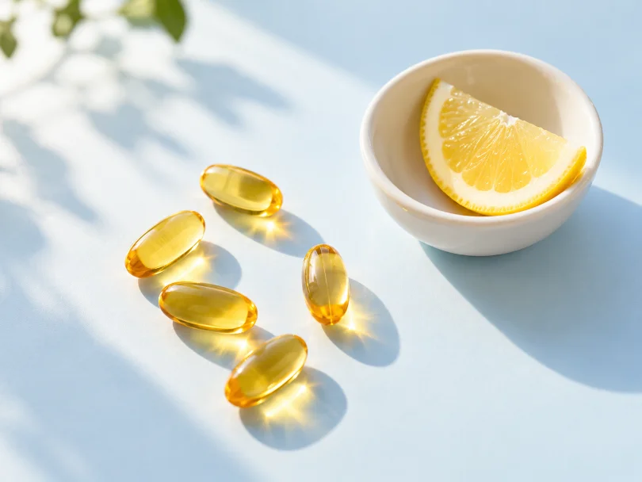
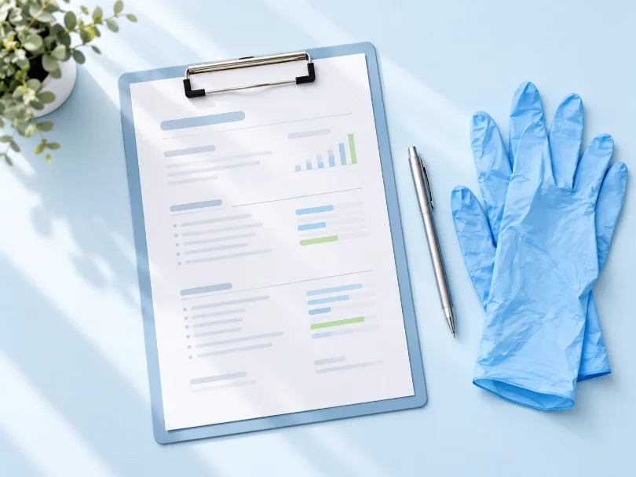

Корисне про аналізи
Пояснюємо простими словами, що показують аналізи, як до них підготуватися і коли варто перевіритися.
-

Вітамін D: кому і коли перевіряти рівень
Дефіцит вітаміну D трапляється частіше, ніж здається, особливо взимку. Розповідаємо, кому варто здати аналіз і як часто його повторювати.
Читати статтю -

Як читати загальний аналіз крові: 7 показників
Гемоглобін, лейкоцити, тромбоцити, ШОЕ — що означає кожен показник і коли відхилення від норми справді привід звернутися до лікаря.
Читати статтю -
Щитоподібна залоза: мінімальний набір досліджень
ТТГ, вільний Т4 та антитіла до ТПО — з чого почати перевірку щитоподібної залози і коли додавати інші аналізи.
Читати статтю -
Феритин і залізо: чому втома буває «в аналізах»
Нормальний гемоглобін ще не означає достатніх запасів заліза. Пояснюємо, навіщо дивитися на феритин і як підготуватися до аналізу.
Читати статтю -
Чек-ап раз на рік: які аналізи варто здавати дорослим
Базовий перелік досліджень для щорічної перевірки здоровʼя — і що додати після 40 років.
Читати статтю -
Аналізи для дитини: як підготувати малюка і себе
Як пояснити дитині, що буде, скільки не годувати перед забором крові і що взяти з собою, щоб візит пройшов спокійно.
Читати статтю -
Глюкоза і глікований гемоглобін: у чому різниця
Один аналіз показує рівень цукру зараз, інший — за останні три місяці. Розбираємо, коли потрібен кожен із них.
Читати статтю -
Ліпідограма: «хороший» і «поганий» холестерин
З чого складається ліпідний профіль, чому загального холестерину недостатньо і як правильно підготуватися до аналізу.
Читати статтю -
Коли здавати аналізи після хвороби
Після ГРВІ чи антибіотиків показники можуть відрізнятися від звичних. Підказуємо, скільки зачекати, щоб результат був точним.
Читати статтю -
Жіночі гормони: у який день циклу здавати
ФСГ, ЛГ, естрадіол і прогестерон здають у різні дні циклу. Пояснюємо, як обрати правильний день, щоб результат був інформативним.
Читати статтю -
Вітамін B12 і фолієва кислота: навіщо перевіряти разом
Дефіцит цих вітамінів дає схожі симптоми — від утоми до проблем із памʼяттю. Розповідаємо, кому варто здати обидва аналізи.
Читати статтю -
Загальний аналіз сечі: як зібрати правильно
Ранкова порція, чистий контейнер і кілька простих правил — від них залежить, чи буде результат точним.
Читати статтю -
Аналізи перед садком і школою: що перевірити дитині
Які дослідження зазвичай потрібні для медичної довідки і як підготувати дитину, щоб усе пройшло швидко.
Читати статтю -
Кортизол: навіщо здавати і як підготуватися
Рівень кортизолу змінюється протягом доби й залежить від стресу. Підказуємо, коли і як здавати аналіз, щоб він був показовим.
Читати статтю -
Онкомаркери: коли вони справді потрібні
Онкомаркери не замінюють обстеження, але допомагають лікарю в контролі. Розбираємо, кому і за яких умов їх призначають.
Читати статтю